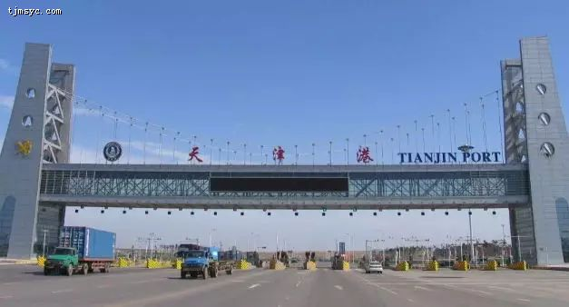
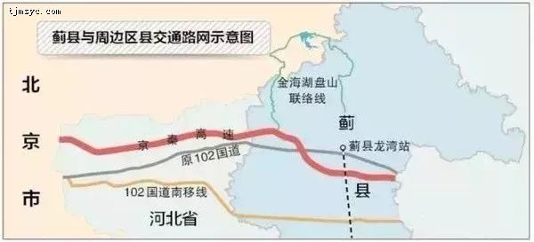
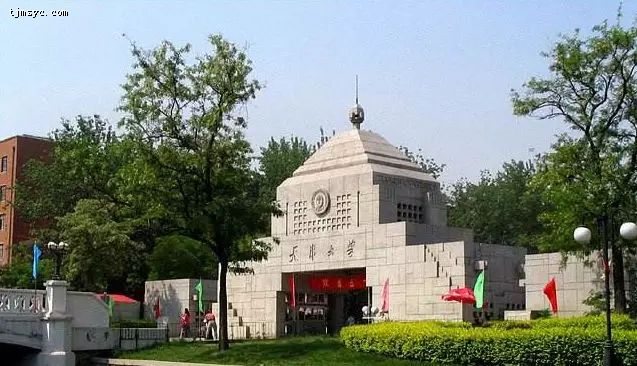
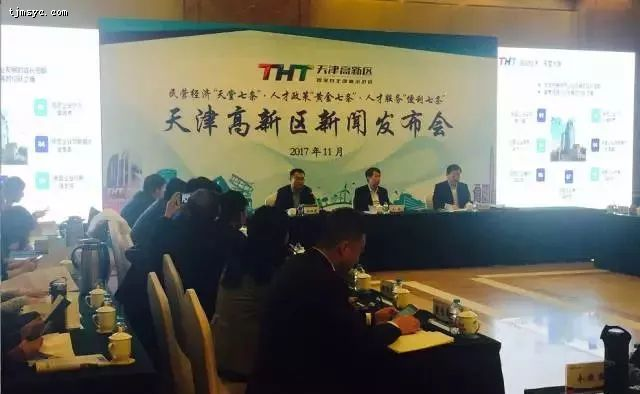
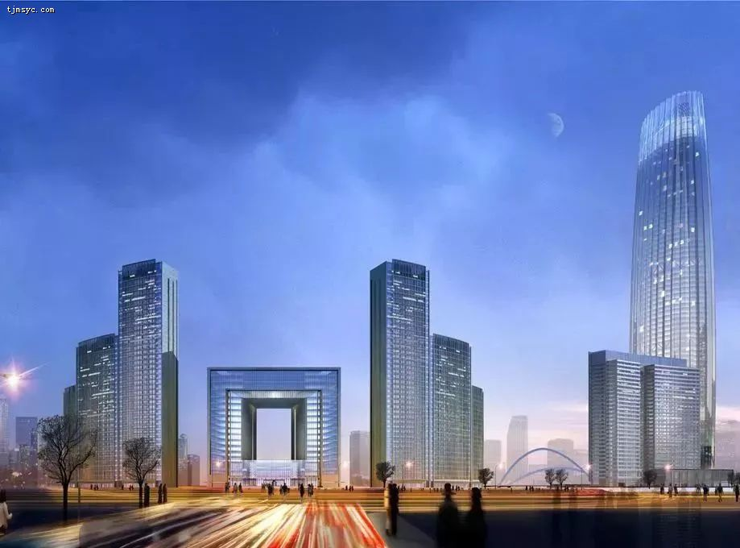

为什么很多人兜兜转转还是选择了在天津落户呢？近年来，中国经济飞速发展，城市规模也不断扩大，为了严格控制特大城市的人口规模，各地相继推出本地户口政策，一城一策。一线城市的落户政策更是难上加难，而天津户口政策就相对宽松许多了，这是其中原因之一，但是天津魅力何在，接下来小编带你具体的看一下：
天津究竟是怎样一种存在
为何那么多人选择在天津落户
是为它的安逸慵懒还是它的发展机遇
未来的天津又会变成什么模样

一段短片帮你了解天津、认识天津
▼
▼ 天津晋升为中国新一线城市
▼ 距离北京最近的一线城市
北京到天津现坐城际只需半小时左右，大概每15分钟一趟，基本上可以说天津和北京基本上就是一个城市了，往来方便，以后办结婚生子和档案户口等等手续非常方便，不用坐几个甚至几十个小时的火车回老家或其他省办理，既能省去很多时间，又能节省很多费用。
▼ 2018中国城市最具综合竞争力之一
▼ 全球旅游最佳实践样本城市

▼ 2017中国特色魅力城市200强
▼ 天津荣登全国「机遇之城」第九名
《机遇之城2017》报告
▼ 中国大陆创新能力最强的城市
▼中国旅游城市吸引力排行榜第四名
根据地级以上城市的旅游人数、旅游收入、旅游业比重、交通便利程度和旅游基础设施五个维度来进行评比，进而计算出中排名，天津名列第四毫无意外。

▼ 华北最智慧城市第四名
2016年中国互联网协会和蚂蚁金服等，发布了中国新型智慧城市白皮书，天津以81.62的高分成为最智慧城市第四名。
...
这样的天津，
无论是硬实力还是软实力，都一路攀升！
这种跃迁式的发展轨迹和战略雄心，
像极了以创新、梦想、活力著称的北上广！
如果说天津将成为下一个北上广！
你会不会庆幸当初选择留在这里？
天津VS北上广
全球的天津
如果说，
当年北上广的开放是面向全国的话，
那么在新的时代背景下，天津代表的，
则是面向内陆乃至全球的新一轮开放！
天津认证企业“走向澳洲”更便利
中国与澳大利亚海关日前，正式签署AEO互认安排制度，以进一步提升中澳贸易的安全与便利化水平。
承载中国新一轮的对外开放
天津是中国北方唯一具有河海通津优势的港口，“一带一路”火遍全国！天津作为21世纪海上丝绸之路的重要节点，发挥着举足轻重的作用！天津港与“一带一路”欧亚陆地走廊相连，是中国大陆唯一具备三条连接境外通道的大陆桥港口！
最杰出的港口之一天津港
由天津港出发的集装箱班轮航线达120条，其中有80多条通达一带一路沿线国家。截至去年4月，天津“走出去”企业有1818家，在海外及“一带一路”，沿线国家投资额达435亿美元！其中超千万美元项目占38.6%！

拥有中国北方第一个自贸区
天津拥有，中国北方第一个自贸区，是国务院批准的第一个！国家综合改革创新区，被誉为“中国经济的第三增长极”，教育、医疗、交通等，依托国家优惠政策瞬息万变。
未来，天津更好的是，
京津冀一体化进程中的关键节点。
医疗卫生、教育事业等都将对接更优质的资源！
天津VS北上广
经济全面爆发
GDP历来是衡量一个地区，总体经济状况的重要指标！截至2018年1月，天津GDP则突破1.8万亿！位居第五！
天津市著名本土工业企业更是不胜枚举，天津铁厂、渤海钢铁集团、渤海化工集团、天津一汽、天士力集团、天狮集团等...每个名字都是如雷贯耳，助推天津经济迅猛发展，功不可没！

朝亚北辰云计算中心项目正式落户
该项目占地面积482亩，总投资60亿元人民币，为国际顶级数据中心，主要客户包括亚马逊、微软等世界500强及国际金融财团企业。项目一期投资12亿元人民币，稳定投产后，每年可实现收入约2.77亿元，实现税收0.28亿元。
建设中关村科技城
打造中关村科技城，到2020年，京津科技城将建设成为京津双城联动干线的协同枢纽、创新产业集聚区、产城融合的典范。
建成华明智能制造小镇
华明镇作为天津市第一批小城镇建设试点，打造智能化小镇、生态化小镇、创新型小镇三张名片！打造新一代信息技术、电力电气、
机器人三个百亿级产业集群~计划到2020年，建成经济发达、生活便利、环境美好的智能制造小镇！
天津VS北上广
交通之城
如今的天津正在打造综交通枢纽，将天上、地面、地下各种交通汇聚一体！实现航空、高铁、地铁立体交通枢纽。未来的天津，上天入地无所不能！
天津将拥有两座飞机场，目前天津拥有天津滨海国际机场，未来，津冀将合作建设滨海—唐山（汉沽）通用机场！并加强内陆无水港合作以及一大批跨区域路网建设，为京津冀协同发展以及自贸区建设提供配套保障~
世界级的地铁网络布局
天津目前地铁一共运行5条线路，但是天津地铁规划非常完善，到2020年，地铁交通会十分便利！
到2020年，轨道交通联网运营里程达到375公里！
编制新一轮轨道交通建设规划~
未来，2号线将西延至杨柳青，5号线力争上半年运营，预计很快6号线一期将实现全线试运行！8号线一期预计2022年通车，10号线预计2020年底试运行，11号线一期也已经开始建设。
······
到2020年天津轨道交通总规模将达到1036公里，将实现两个城区之间1小时通勤目标~
高铁通达全国各地
基本实现京津保唐1小时交通圈，京津冀主要城市1至2小时交通圈~到2020年，铁路总里程1500公里。其中，高速铁路与城际铁路里程达到460公里。
京哈高铁蓟州龙湾站明年建成通车
目前正在加紧建设的京哈高铁蓟州龙湾站，预计今年就可以建成通车，到北京站只需半小时！

京唐城际铁路将于2020年建成
京唐城际铁路全线共设置车站7座，分别为北京城市副中心站、燕郊站、大厂站、香河站、宝坻南站、鸦鸿桥站和唐山站。将于2020年12月底建成！
宝坻南站将建成高铁枢纽
京唐城际将设置8座车站，与津秦高铁相连~项目预计到2020年建成通车！
公路与高速建设日渐完善
建成跨界通道顺畅衔接、高等级公路广域覆盖的公路网，到2020年，公路总里程达到17500公里！
宁河"一小时交通圈"
京津、津宁、滨保、塘承、京津塘、长深、唐廊、滨海西外环和蓟汕联络线高速公路贯通全区。宁河高速公路密度位居全市前列~此外，宁河区与北京、天津、滨海新区、唐山以及首都国际机场、天津滨海国际机场、天津港整体，纳入一小时交通圈~为京津冀市民出行提供便捷！
一卡通，京津冀随便刷
今年起，凡持有“交通联合”标识的，交通一卡通互通卡，均可在市区、滨海公交线路、地铁运营线路以及北京市、河北省（石家庄等13城）公交、地铁刷卡乘车，并享受当地票价优惠政策！
天津VS北上广
赢得年轻人就是赢得未来
21世纪什么最贵？
“人才”
天津深刻践行这一真理，在教育和人才引进上的投资可圈可点！天津高校遍布全城，截至2018年1月20日，天津高等学校共计71所！其中：正规大学57所，成人高等学校14所、民办高等学校12所。无论是高校数量、在校大学生规模，还是吸引应届毕业生就业数量，天津都有绝对的优势！

就业岗位越来越多
腾讯、新浪、京东等纷纷来这里，根据相关数据统计，在天津，1公里地铁大概能提供60个就业岗位！
高端社区免费入住
高新区为人才聚集，集中发布民营经济“天堂七条”、人才政策“黄金七条”和人才服务“便利七条”政策，提供最高1000万元个人奖励！并保证高端社区免费入住、子女教育补贴、购车补贴···

多项政策为企业发展提供便利
最近，天津政府提出，营造企业家创业发展良好环境~各区、各部门积极响应，定了一系列相关政策措施。为企业家在天津发展，提供更多便利条件！

外地公积金可转入天津
根据规定，职工在本市稳定就业并正常缴存住房公积金的，可将原就业地缴存的住房公积金转入本市，职工本人可持身份证和住房公积金联名卡，到市公积金管理中心所属的任一管理部，办理住房公积金异地转入业务，外地来津工作，公积金也能跟着走！
天津VS北上广
房子就是潜力股
（北上广以上海为例）
上海目前的房价均价50270元/㎡，
天津当前二手房房价21986/㎡！
相比北上广深，天津的房价努力奋斗还是有买得起的希望！
而对于已经买房的人而言，如果天津各区按照100平米的房屋面积计算，前几年的房价与目前房价相比，稳赚不赔！

天津VS北上广
生态之城
未来五年，天津将新建提升100个街心和社区公园！由城市任意点出发500米可到达，不小于1000平方米的街头街心绿地，1公里可达不小于3000平方米的街心公园或集中绿地！3公里可到达区级公园！
10公里可见市级公园或大型风景区，满足市民群众就近休闲、健身、游憩等综合需求！
2020年津城将用上更多清洁能源。到2020年，全市可再生能源利用实现，年可替代标准煤320万吨！光伏发电到2020年全市太阳能！发电装机规模超过80万千瓦，相当于一座小型热电厂~

并且建设十大陆上风电项目，
推进海上风电，
滨海新区作为重点发展区域！
天津VS北上广
天空之城
中国117大厦、周大福滨海中心、富力大厦、天塔等高楼拔地而起！
【中国117大厦597m】
【周大福滨海中心-530m】
【富力大厦439m】
【天塔415.2m】
【津塔-336.9m】
虽然北上广是不可复制的，但天津与北上广有着太多的相似之处！
如果未来几年你仍留在天津，
你一定会感到无比庆幸和自豪！
因为，你将见证天津翻天覆地的变化！
还有什么理由不为它骄傲！

扫码微信免费咨询天津落户
微信号：nan395013050